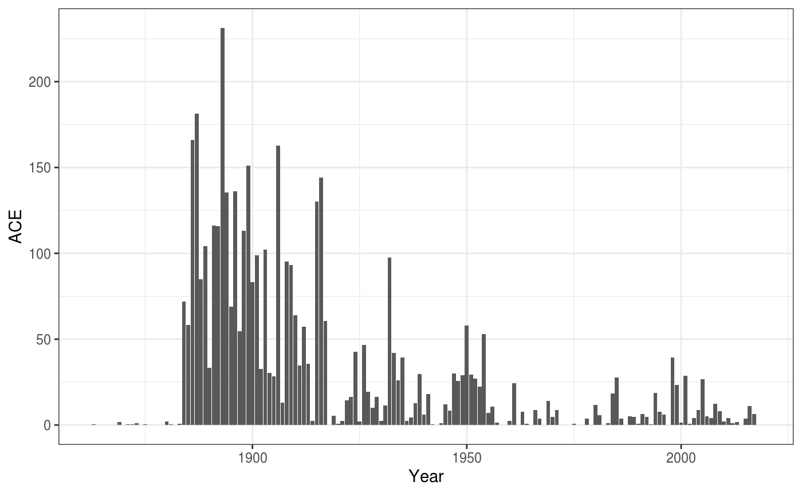

vignettes/accumulated_cyclone_energy.Rmd
accumulated_cyclone_energy.Rmdlibrary(dplyr)
library(ggplot2)
library(HURDAT)
library(lubridate)
library(readr)
library(rrricanes)
library(rrricanesdata)ACE or Accumulated Cyclone Energy is a method of measuring energy of a cyclone or for an entire season. It is calculated by the formula
\[ \text{ACE} = 10^{-4}\sum{v^2_\text{max}} \]
where \(v_\text{max}\) is the wind speed in knots. Values may only be used when a storm is a tropical system with winds of at least 35 knots. Additionally, only six-hour intervals are used.
To calculate ACE you would want to use the fstadv dataset and apply the following rules:
Status is Tropical Storm or Hurricane.Wind is not NAKey
Wind
fstadv <- fstadv %>%
filter(hour(Date) %in% c(3, 9, 15, 21),
Status %in% c("Tropical Storm", "Hurricane"),
!is.na(Wind)) %>%
group_by(Key) %>%
select(Name, Wind)## Adding missing grouping variables: `Key`Now let’s summarise our dataset with new variable ACE.
fstadv %>%
summarise(Name = last(Name),
ACE = sum(Wind^2) * 1e-04) %>%
arrange(desc(ACE)) %>%
top_n(10)## Selecting by ACE## # A tibble: 10 x 3
## Key Name ACE
## <chr> <chr> <dbl>
## 1 AL092004 Ivan 69.9
## 2 AL112017 Irma 66.6
## 3 AL132003 Isabel 62.5
## 4 AL142016 Matthew 48.0
## 5 AL062004 Frances 46.9
## 6 AL152017 Maria 44.6
## 7 AL091999 Gert 44.0
## 8 AL112010 Igor 42.9
## 9 AL102003 Fabian 42.6
## 10 EP071999 Dora 42.2This matches somewhat well with Wikipedia and other sources. But, you may notice we’re missing some storms. rrricanes currently only holds data back to 1998; this data is considered “real-time”.
A companion package, HURDAT is available in CRAN that has data for all cyclones dating back as far as 1851. This package has less data than rrricanes. But, as it is based on a post-storm reanalysis project, the data is more accurate.
Let’s revisit the top 10 using HURDAT:
AL %>%
filter(hour(DateTime) %in% c(0, 6, 12, 18),
Status %in% c("TS", "HU"),
!is.na(Wind)) %>%
group_by(Key) %>%
summarise(Name = last(Name),
ACE = sum(Wind^2) * 1e-04) %>%
arrange(desc(ACE)) %>%
top_n(10)## Selecting by ACE## # A tibble: 10 x 3
## Key Name ACE
## <chr> <chr> <dbl>
## 1 AL031899 UNNAMED 73.6
## 2 AL091893 UNNAMED 63.5
## 3 AL141932 UNNAMED 59.8
## 4 AL041906 UNNAMED 56.0
## 5 AL031915 UNNAMED 41.3
## 6 AL041898 UNNAMED 40.1
## 7 AL061893 UNNAMED 39.8
## 8 AL061915 UNNAMED 37.7
## 9 AL061886 UNNAMED 37.1
## 10 AL021915 UNNAMED 36.9A couple of things to notice here:
HURDAT, the common times used are 00:00, 06:00, 12:00 and 18:00 UTCACE is slightly higher and that could be for a number of reasons. For example, on re-analysis the Hurricane Research Division may have determined a cyclone was actually tropical (shown in HURDAT) when initially it was believed to be extratropical (as shown in rrricanes). Or, and more likely, they determined through additional data that a storm was actually stronger than originally though.
You can also calculate ACE for a season. Instead of grouping by Key we group by Year. I’ll stick with HURDAT in this example.
(df <- AL %>%
mutate(Year = year(DateTime)) %>%
filter(hour(DateTime) %in% c(0, 6, 12, 18),
Status %in% c("TS", "HU"),
!is.na(Wind)) %>%
group_by(Year) %>%
summarise(ACE = sum(Wind^2) * 1e-04) %>%
arrange(desc(ACE))) %>%
top_n(10)## Selecting by ACE## # A tibble: 10 x 2
## Year ACE
## <dbl> <dbl>
## 1 1893 231.
## 2 1887 181.
## 3 1886 166.
## 4 1906 163.
## 5 1899 151.
## 6 1916 144.
## 7 1896 136.
## 8 1894 135.
## 9 1915 130.
## 10 1891 116.This also matches relatively well with that on Wikipedia and other sources.

It would certainly seem that tropical cyclone activity ebbs and flows over time.